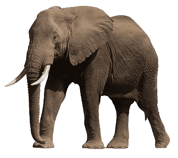
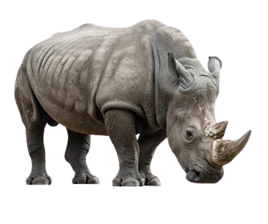

É uma imensa região de savana e uma das maravilhas naturais da África, não uma floresta. Conhecido como "planícies intermináveis", este ecossistema é o cenário da maior migração anual de animais do mundo.
O elefante-africano é um gênero da família elephantidae. O gênero é composto por duas espécies existentes de elefante: elefante-da-savana e elefante-da-floresta.
O rinoceronte-branco ou rinoceronte-de-lábios-quadrados é o maior dos rinocerontes, da ordem dos mamíferos perissodáctilos. Difere-se do rinoceronte-negro não exatamente pela cor, e sim pelo formato de seus lábios.
